This article is for Meddbase customers who have a merchant account with Opayo. Particularly, those who manage Memberships with recurring payments using Opayo as the payment method.
What’s the general context?
There are industry changes regarding Strong Customer Authentication (SCA) requirements, which require additional information when processing repeat payments. The deadline for SCA compliance is 14 March 2022. This means that merchants using repeat payments have to send additional ‘Credential on File’ data to ensure there is no disruption to payment processing.
A ‘Credential on File’ transaction is when you store the cardholder’s card data to make a payment later.
What does the article contain?
The article contains outlines of:
What the change means in the Meddbase system
Related configuration of email templates
How this affects Meddbase users including illustrative scenarios of what they need to do
How this affects patients and what they can do
In summary, what does this change mean for the Meddbase system and its users?
Technically, we’ve had to make changes to our Opayo integration to enable the delivery of these additional ‘Credential on file’ values when repeat transactions are managed through MySagepay (Opayo).
In practice, this means that:
Existing payment schedules for membership payments will be expired. This is because the data they contain isn’t compliant with new requirements
Customers’ (i.e. patients) will need to be put back through the payment process to re-authorise any future repeat payments for membership so that data will be compliant
Any repeat membership payment schedules going forward will have an expiry date
The Expiry date for recurring payments is a new feature introduced with the March 2022 release. When the Expiry date passes, the recurring payment will need to be setup again.
There is an email template available to this process to provide notifications to patients. Meddbase application administrators should check this template and update if required.
Finding the email template
To find the email template:
Go to Admin > Configuration
In the Configuration section go to the Online Portal section
In the Online Portal section navigate to the Online payments panel
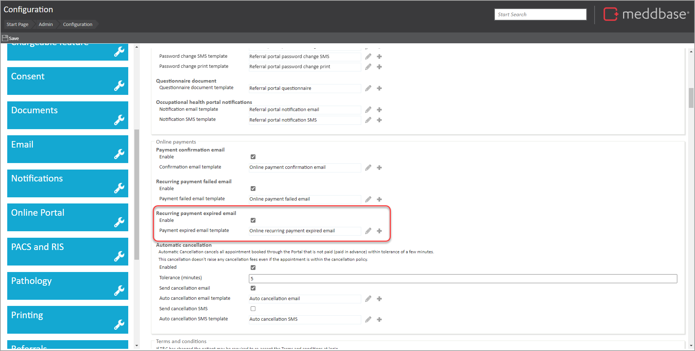
Here you have the opportunity to review and update the template.
Editing an email template
To then edit the email template:
Click on the pencil icon next to the template
In the template presented in its own browser tab
Edit the format
Use template codes as required
Save the changes
Using template codes in the email template
It is possible to use a range of template codes specific to membership schemes. These are noted below.
Template code
What it does
{MembershipSchemeName}
Presents the descriptive name of the Membership Scheme
{MembershipSchemeCode}
Presents the code for a Membership Scheme
{MembershipSchemeBillingFrequency}
Presents the billing frequency (e.g. week, month, year)
In practical terms, there will be changes that affect users of Meddbase when
They modify a patient record with an existing membership, and that membership has an expired recurring payment
Where adding a patient to a membership
The update of existing memberships will be relevant for a transition period. This is required because existing recurring payments have had to be expired so that they can be set up again with the additional 'CoF' data that’s needed going forward.
Scenario examples for Meddbase users
As practical examples, the scenarios below illustrate what users will see and what they need to do.
Scenario 1 – Patient already on a members-only Charge Band with a recurring payment – with no outstanding invoice
In the scenario where:
A patient is on a members-only Charge Band
There is no invoice (i.e. no outstanding balance) on the membership and the existing membership has been expired
There will be a requirement to set up a new recurring payment. This is triggered by:
Opening a patient record
Going to Personal details
Then saving the record. When this happens, the user is presented with a Membership Scheme payment dialog which enables the setup of a new recurring payment.
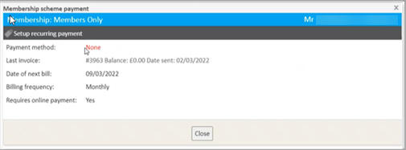
When the user is ready to set up the recurring payment, they can do as follows:
Click on Setup recurring payment At this point, a notification is presented to the user, advising that the patient will be required to do a small transaction, which will be automatically refunded.
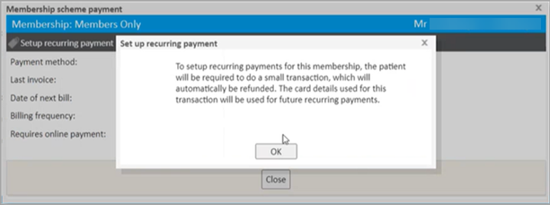
From here, the user can click on OK
In the Setup recurring payment dialog the user can
Ensure the correct payment method is selected
Select card
Save the change
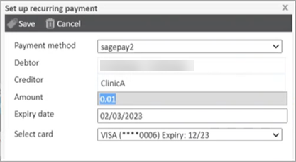
Scenario 2 - Patient already on a members-only Charge Band with a recurring payment – balance on the invoice
In the scenario where:
A patient is on a members-only Charge Band
There is an invoice on the membership
There will be a requirement to set up a new recurring payment and pay the outstanding invoice. This is triggered by:
Opening a patient record
Going to Personal details
Then saving the record When this happens, the user is presented with a Membership Scheme payment dialog which enables the setup of a new recurring payment. When the user is ready to set up the recurring payment, from the Membership scheme payment dialog, they can do as follows:
Select Setup recurring payment A notification is presented to the user, advising that the patient will be required to pay the balance on the invoice.
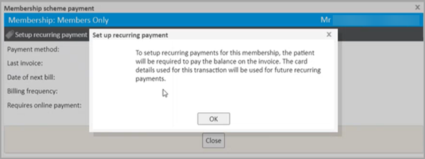
From here, the user can click on OK
In the Make Payment dialog the user can:
Review and update the Expiry Date (which is defaulted to 1 year from the current date)
Select Card to use or add a new card
Save the change
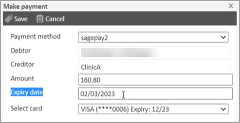
The changes noted above in Scenario 1 and 2 only need to happen once for each patient.
Scenario 3 - When a patient is newly assigned to a Membership Charge Band with a recurring payment
This scenario will apply to any brand new member or a patient who is newly added to a members-only Charge Band.
There will be a requirement to set up a new recurring payment authorisation. This is triggered by
Adding the patient to the Members only Charge Band
Then saving the patient record When this happens, the user is presented with a Recurring payment dialog.
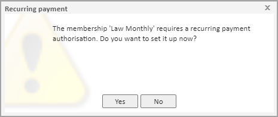
From here the user can click on Yes When the user is ready to set up the recurring payment, from the Membership scheme payment dialog, they can:
Click on Setup recurring Payment
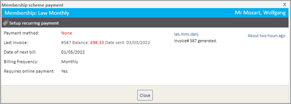
A notification is presented to the user, advising that the patient will be required to pay the balance on the invoice.
From here, the user can click on OK The Make Payment dialog is presented with a range of information populated by default.
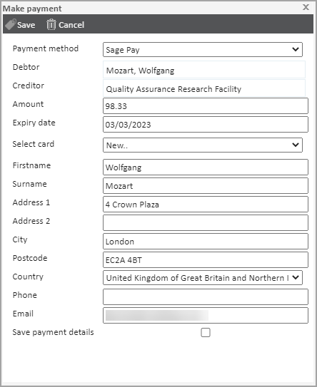
In the Make Payment dialog the user can:
Select card
Review and update other information
Tick the Save payment details checkbox
Click on Save
In the warning dialog noting that the payment cannot be deleted or modified, the user can click on Yes
Where it was a New... card selected in step 6 above the user now has to:
Provide the payer's card details
Select Confirm card details
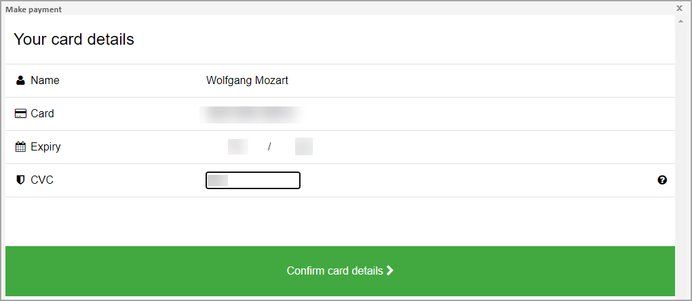
Complete any Purchase authentication steps required
Then continue while the payment is authorised
On completion, the user is presented with a notification that the payment has been successful and that details have been saved for recurring payments.
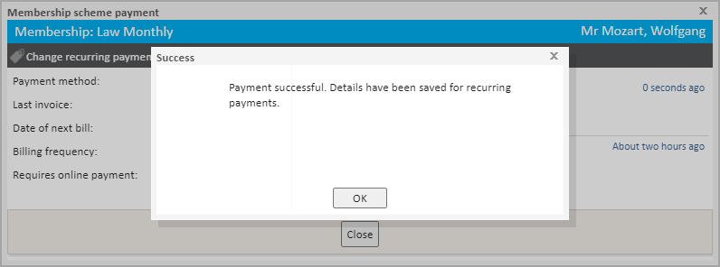
How will this affect patients?
Sending Email notifications to patients
In some contexts, using the configured email template noted above, there will be an email notification sent to patients advising that the payment has expired.
These are triggered when:
A patient has an expired membership and the user goes to the patient record and saves changes to the record
A background process runs (on a daily schedule) to identify if an invoice is due for a membership
If so, the system generates an invoice for the membership
Where the payment has expired, an email will be sent
Enabling patients to set up recurring membership payments in the Patient Portal
Where:
A recurring membership has expired for the patient
The patient has access to the Patient Portal
The patient will be able to:
Login to the Patient Portal
Go to the Memberships section
Click on Set up recurring payment
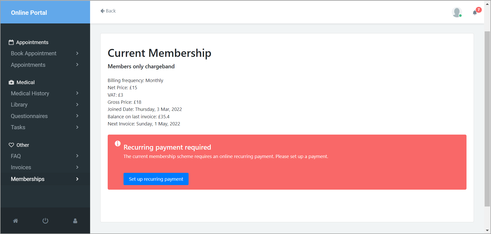
The paths through the process can vary depending on what already exists in terms of membership data for the patient. That said, they will follow similar paths to those shown in the scenarios above for Meddbase users.
So in the scenario where there is an outstanding balance on the last invoice…
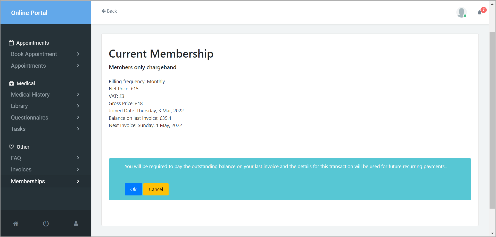
…a new recurring membership payment can be set up.
In the Patient Portal, the user doesn’t have the option of setting an Expiry Date, this will always be set to 1 year from today.
What else is useful to know?
You should set the Expiry date to expire after the date calculated through the Billing frequency schedule
When making a payment, there is the ability to review and update the Expiry date. This expiry date should always be later than the next payment date calculated through the billing frequency.
So for example:
If the membership billing frequency is weekly
Then the membership repeats after 7 days
But if the payment is set to expire before the date calculated from the billing frequency interval, the recurring payment cannot be set up
If the user tries to do this, then they are presented with an Invalid expiry date